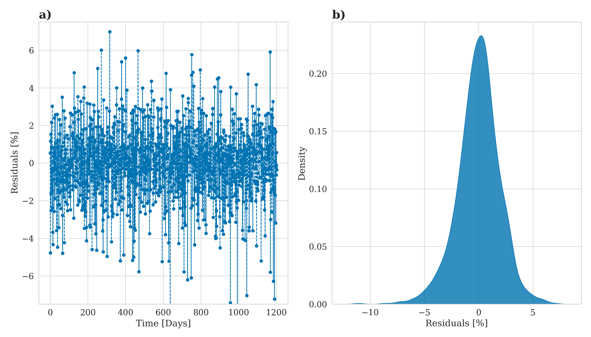
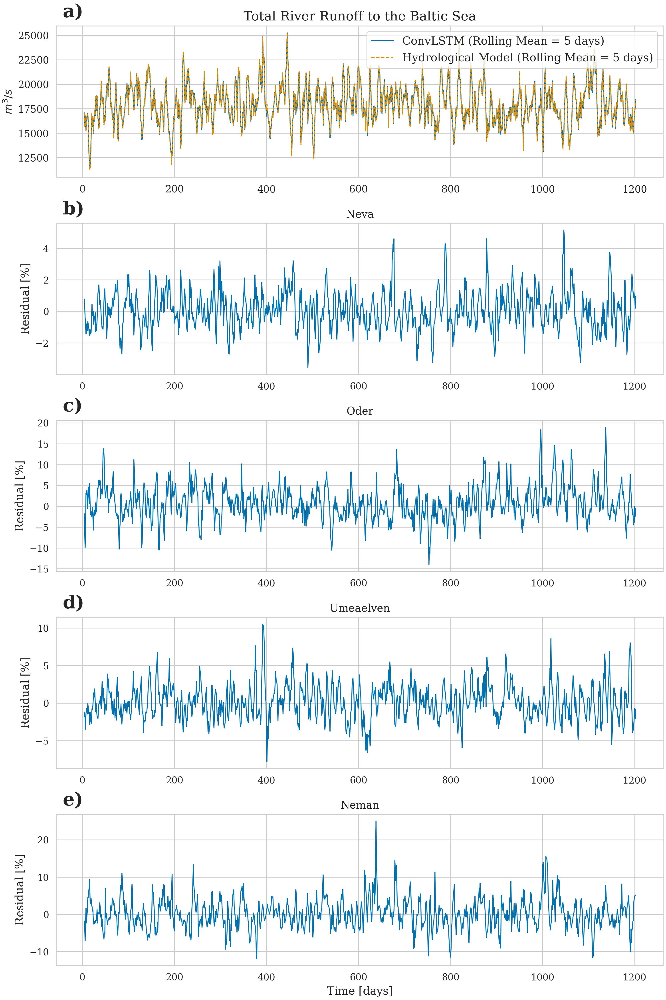
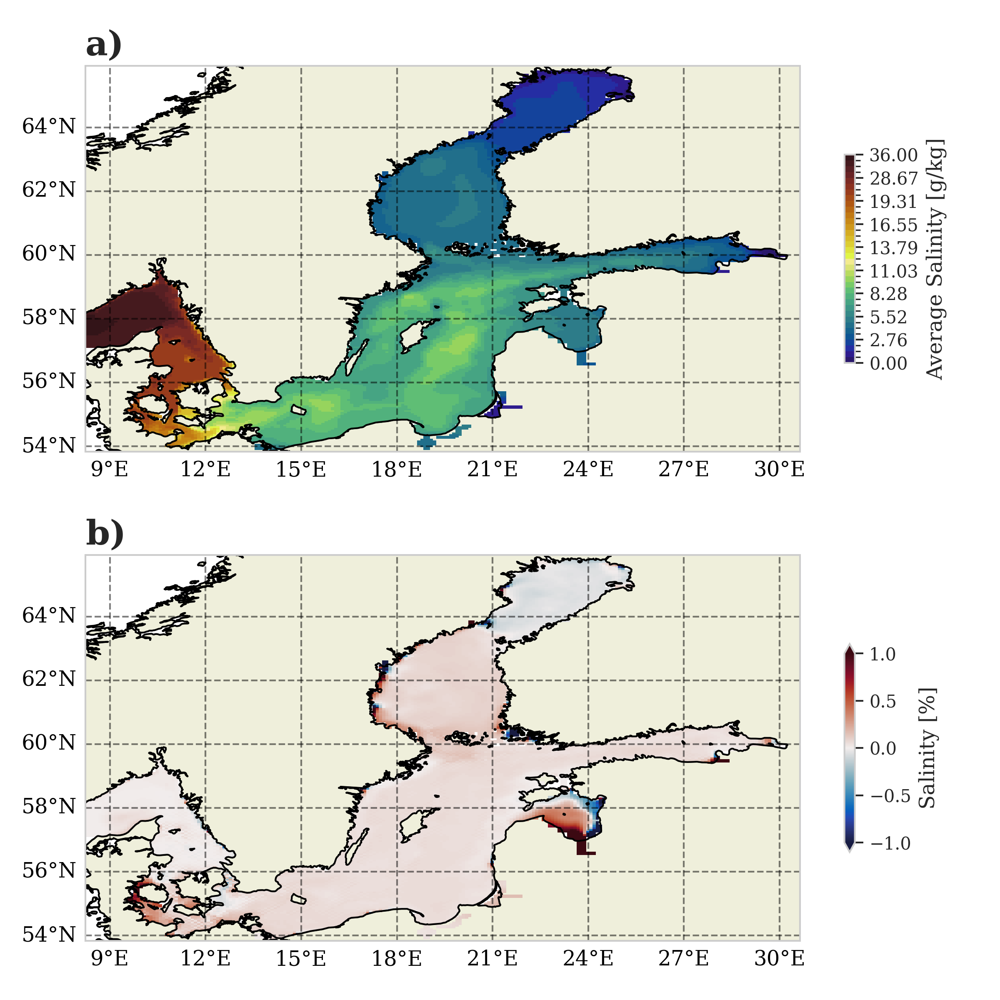

From Precipitation to Prediction: Using ConvLSTM Models for Comprehensive River Runoff Forecasting
![]()
a
1 Introduction
River runoff is an important component of the global water cycle as it comprises about one third of the precipitation over land areas (Hagemann et al., 2020). Therefore, accurate runoff forecasting is crucial for effective water resources management, particularly over extended periods (Fang et al., 2019; Tan et al., 2018). In the context of climate change studies, river runoff is usually generated in two ways. First, river runoff as input for ocean models can be created using hydrological models such as the Hydrological Discharge (HD) model (Hagemann et al., 2020). HD models calculate the water balance using hydrological processes (e.g. snow, glaciers, soil moisture, groundwater contribution). It represents a complex forecasting tool that uses underlying physical processes. The second approach uses data-driven models that integrate statistical correction, using land surface schemes of global or regional climate models [QUELLE].
With the recent rise of machine learning in climate research various model architectures have also been tested for river runoff forecasting. Common approaches employ feed-forward artificial neural networks, support vector machines, adaptive neuro-fuzzy inference systems, and notably, Long Short-Term Memory (LSTM) neural networks that have gained traction for long-term hydrological forecasting due to their excellent performance (humphrey2016hybrid?; huang2014monthly?; ashrafi2017fully?; liu2020streamflow?; fang2022application?; kratzert2018rainfall?).
LSTM networks, first introduced by (hochreiter1997long?) , are an evolution of the classical Recurrent Neural Networks (RNNs). Their structure enables them to learn long-term dependencies while avoiding the vanishing or exploding gradient problem. They have shown stability and efficacy in sequence-to-sequence predictions. However, a limitation of LSTMs is their inability to effectively capture two-dimensional structures, an area where Convolutional Neural Networks (CNNs) excel. Recognizing this limitation SHI et al. (2015) proposed a Convolutional LSTM (ConvLSTM) architecture, which combines the strengths of both LSTM and CNN. The ConvLSTM network has been proven useful for spatio-temporal applications such as precipitation nowcasting (SHI et al., 2015), flood forecasting (moishin2021designing?), and river runoff forecasting (ha2021?; zhu2023spatiotemporal?).
In this work, we demonstrate that ConvLSTM networks are a reliable method for predicting multiple rivers simultaneously, using only atmospheric forcing, even in the absence of a fully functional hydrological model with a complex parameterization. We use the Baltic Sea catchment as an example to illustrate our approach. Although the methodology we propose is universally applicable across various geographic regions, the Baltic Sea represents a challenging region due to its unique hydrological characteristics, being nearly decoupled from the open ocean (see Figure). As a consequence, the salinity of the Baltic Sea is driven to a large part by freshwater supply from rivers. Freshwater enters the Baltic Sea through river runoff or positive net precipitation (precipitation minus evaporation) over the sea surface. The net precipitation accounts for 11 \(\%\) and the river input for 89 \(\%\) of the total freshwater input (meier2002simulated?). Modelling the Baltic Sea is therefore to a large part the result of the quality of the river input, that is used for the simulation. This makes the accurate modeling of river runoff especially critical for simulations pertaining to the Baltic Sea.
In this work we will, we present a ConvLSTM architecture that is able to predict daily river runoff for 97 rivers across the Baltic Sea catchment. mehr Fokus auf Neues?
2 Implemented model architecture
2.1 The main idea
We assume that the runoff at a specific point in time for all \(N_r\) considered rivers, collected in the vector \(\vec{R}^t \in \mathbb{R}^{N_r}\), can be accurately approximated by a functional \(\vec{M}(\{X^t_k[x,y,\tau]\})\) of \(k=1,\ldots N_k\) atmospheric fields \(X^t_k[x,y,\tau]\) which are known for the past \(\tau=1,\ldots N_\tau\) time instances. This relationship is expressed as:
\[ \begin{aligned} \vec{R}^t = \vec{M}(\{X^t_k[x,y,\tau]\}) \ . \end{aligned} \]
The atmospheric fields are evaluated over a spatial domain \(x=1,\ldots N_x\) and \(y=1,\ldots N_y\) which is sufficiently large to capture all significant local and non-local contributions of the atmospheric fields to the river runoff.
Typically, such a mapping is realized using a hydrological model that simulates all relevant physical processes, transforming variables like precipitation and evaporation into river runoff. This process relies heavily on domain knowledge to tune all parameters to reasonable values.
As an alternative, we propose that this functional can be adequately represented by a combination of a convolutional Long-Short Term Memory (ConvLSTM) model with a subsequent fully connected neural network. This approach eliminates the need for detailed knowledge of the involved processes and their modeling. Instead, these features can be “learned” by the network in an automated manner. Our proposed network architecture is visualized in Figure 1 and described in detail in the following sections. To provide an overview, we will discuss the main components of this architecture one-by-one.
2.2 ConvLSTM network
2.2.1 The LSTM approach
Before turning directly to the ConvLSTM the simpler architecture of the plain Long-Short Term Memory (LSTM) model is examined which serves as a foundation for understanding the more complex ConvLSTM.
The LSTM, a specialized form of Recurrent Neural Networks (RNNs), is specifically designed to model temporal sequences \(\vec{X}^t[1], \ldots \vec{X}^t[\tau],\ldots \vec{X}^t[N_\tau]\) of \(N_\tau\) input quantities \(\vec{X}^t[\tau] = (X^t_k[\tau]) \in \mathbb{R}^{N_k}\). This sequence is taken from a dataset given in form of a time series \(\{\vec{X}^t\}\) with the endpoint coinciding with the specific element in the time series connected to time \(t\), i.e. \(\vec{X}^t[N_\tau] \equiv \vec{X}^t\), see Figure 1. Here, \(N_k\) represents the number of input “channels,” which can correspond to different measurable quantities. The LSTM’s unique design allows it to adeptly handle long-range dependencies, setting it apart from traditional RNNs in terms of accuracy (see Figure 2).
This performance in modeling long-range dependencies has been validated in various studies (XXX?). The key component of the LSTM’s innovation is its cell state, \(\vec{C}^t[\tau] = (C^t_h[\tau]) \in \mathbb{R}^{N_h}\), which stores state information, also referred to as long-term memory. This state information complements the so-called hidden state \(\vec{H}^t[\tau] = (H^t_h[\tau]) \in \mathbb{R}^{N_h}\) vector, which is also known from simpler neural network architectures. In case of the LSTM, the hidden state vector plays the role of the short-term meory.
A significant advantage of this architecture is the memory cell’s ability to retain gradients. This mechanism addresses the vanishing gradient problem, where, as input sequences elongate, the influence of initial stages becomes harder to capture, causing gradients of early input points to approach zero. The LSTM’s activation function, inherently recurrent, mirrors the identity function with a consistent derivative of 1.0, ensuring the gradient remains stable throughout backpropagation.
The cell state and the hidden state are vectors, where each element is associated with one of the \(N_h\) hidden layers, labeled by \(h\), which are internal, artificial degrees of freedom that enable the high adaptibility of neural networks. These two state vectors are determined through several self-parameterized gates, all in the same vector space as \(\vec{C}^t[\tau]\), see Figure 2 for a visualization.
In particular, the forget gate \(\vec{F}^t[\tau]\) defines the portion of the previous (long-term memory) cell state \(\vec{C}^t[\tau-1]\) that should be kept, see dashed cyan box therein. The input gate \(\vec{I}^t[\tau]\) controls the contribution of the current input used to update the long-term memory, \(\vec{C}^t[\tau]\) (magenta and yellow boxes). The output gate, \(\vec{O}^t[\tau]\), then determines how much of this updated long-term memory contributes to the new (short-term memory) hidden state, \(\vec{H}^t[\tau]\) (black dashed box).
For a fixed point \(\tau\) in the sequence, the action of a LSTM cell, i.e. the connection between the input \(\vec{X}^t[\tau]\), the various gates and the state vectors, is mathematically given as follows.
First, the elements of the input sequence together with the hidden state are mapped onto auxiliary gate vectors, collectively denoted by \(\vec{g}^t[\tau] = (g^t_h[\tau]) \in \mathbb{R}^{N_h}\), via \[ \begin{aligned} g_h^t[\tau] = \mathcal{M}^{g}_{hk} \, X^t_k[\tau] + \mathcal{N}^{g}_{hh'} \, H^t_{h'}[\tau-1] + \mathcal{B}^g_{h} \ , \end{aligned} \]
where \(g=i,f,o,c\) stands for the input, forget, output and cell-state gate, respectively and Einstein’s summation convention is employed, i.e. indices that appear twice are summed over. The calligraphic symbols \(\mathcal{M}^{g}_{hk}, \mathcal{N}^{g}_{hh'}\) and \(\mathcal{B}^g_{h}\) are the free parameters of the network that are optimized for the given problem during the training, which is at the heart of any machine learning approach. The matrix \(\pmb{\mathcal{M}}^{g} = (\mathcal{M}^{g}_{hk}) \in \mathbb{R}^{N_h \times N_k}\) can be interpreted as a Markovian-like contribution of the current input \(\vec{X}^t[\tau]\) to the gates, whereas the \(\pmb{\mathcal{N}}^{g} = (\mathcal{N}^{g}_{hh'}) \in \mathbb{R}^{N_h \times N_h}\) scales a non-Markovian part determined by the hidden state of the last sequence point \(\tau-1\). The vector \(\vec{\mathcal{B}}^g = (\mathcal{B}^g_{h}) \in \mathbb{R}^{N_h}\) is a learnable bias. It should be stressed that these parameters do neither depend on \(t\) nor on \(\tau\) and are thus optimized once for the complete dataset \(\{\vec{X}^t\}\).
Note that this mapping is sometimes extended by a contribution to the \(g_h^t[\tau]\) from the past cell state \(\vec{C}^t[\tau-1]\) (XXX?). Nevertheless, this mechanism called “peeping” is not further considered in this work.
For the sake of brevity, we can write the mapping more compactly in matrix-vector form as \[ \begin{aligned} \vec{g}^t[\tau] = \pmb{\mathcal{M}}^{g}\vec{X}^t[\tau] + \pmb{\mathcal{N}}^{g} \vec{H}^t[ \tau-1]+ \vec{\mathcal{B}}^g \, \end{aligned} \tag{1}\]
Second, the actual gate vectors are computed by the core equations of the LSTM as proposed by (hochreiter1997long?):
\[ \begin{aligned} \vec{I}^t[\tau] &= \sigma(\vec{i}^t[\tau]) \\ \vec{F}^t[\tau] &= \sigma(\vec{f}^t[\tau]) \\ \vec{O}^t[\tau] &= \sigma(\vec{o}^t[\tau]) \\ \vec{C}^t[\tau] &= \vec{F}^t[\tau] \circ \vec{C}^t[\tau-1] + \vec{I}^t[\tau] \circ \tanh(\vec{c}^t[\tau]) \\ \vec{H}^t[\tau] &= \vec{O}^t[\tau] \circ \tanh(\vec{C}^t[\tau]) \ , \end{aligned} \tag{2}\]
where \(\sigma\) denotes the logistic sigmoid function, \(\tanh\) is the hyperbolic tangent and the \(\circ\) stands for the Hadamard product (all applied in an element-wise fashion to the vectors). In the last two equations the role of the input, forget and output gates as described above becomes apparent.
The third step in a single layer LSTM (as employed for the work presented here) is then to provide the output of the current LSTM cell, i.e. \(\vec{H}^t[\tau]\) and \(\vec{C}^t[\tau]\), to the subsequent LSTM cell that processes the next element \(\vec{X}^t[\tau+1]\) of the input sequence.
The full action of the LSTM network up to the end of the sequence can be written as a nested function call
\[ \left(\vec{H}^t[N_\tau], \vec{C}^t[N_\tau] \right) = L \left( \vec{X}^t[N_\tau], L \left( \vec{X}^t[N_\tau-1], \ldots L \left( \vec{X}^t[1], (\vec{H}^t[0], \vec{C}^t[0]) \right) \ldots \right) \right) \ , \tag{3}\]
where \(L\left(\vec{X}^t[\tau], \left(\vec{H}^t[\tau-1], \vec{C}^t[\tau-1] \right) \right)\) represents Equation 1 and Equation 2. For the present work, the initial conditions are chosen as \(\vec{H}^t[0]=\vec{C}^t[0]=0\), which simply means that there is no memory longer than \(N_\tau\) time steps.
The final output of the ConvLSTM chain, \(\vec{H}^t[N_\tau]\) and \(\vec{C}^t[N_\tau]\), encode information on the full input sequence ending at time \(t\). This information has to be decoded to obtain useful information via an appropriate subsequent network, as it is described in the Section 2.3.
2.2.2 Combining LSTM with spatial convolution
Although the plain LSTM has high performance in handling temporal sequences of point-like quantities it is not designed to recognize spatial features in sequences of, e.g., two-dimensional maps as atmospheric-ocean interface fields. To address this limitation we employ a ConvLSTM architecture as described in the following.
In this kind of network the elements of the input sequence are given as spatially varying fields \(\vec{X}^t[\tau] = (X^t_k[x,y,\tau]) \in \mathbb{R}^{N_k \times (N_x \times N_y)}\), where \(x\in[1, N_x]\) and \(y \in [1, N_y]\) run over the horizontal and vertical dimensions of the map, respectively. In order to enable the “learning” of spatial patterns, the free parameters of the network are replaced by two-dimensional convolution kernels \(\pmb{\mathcal{M}}^{g} = (\mathcal{M}^{g}_{hk}[\xi, \eta]) \in \mathbb{R}^{(N_h \times N_k)\times (N_\xi \times N_\eta)}\) and \(\pmb{\mathcal{N}}^{g} = (\mathcal{N}^{g}_{hh'}[\xi, \eta]) \in \mathbb{R}^{(N_h \times N_h)\times (N_\xi \times N_\eta)}\). The width and the height of the kernels are given by \(N_\xi\) and \(N_\eta\), respectively and \(\xi\in [-(N_\xi-1)/2,(N_\xi-1)/2], \eta\in [-(N_\eta-1)/2,(N_\eta-1)/2]\), where, without loss of generality, we assume odd numbers for the kernel sizes.
The mapping from the input quantities to the gates is then given by a convolution with these kernels \[ \begin{aligned} g^t_h[x,y,\tau] & = \mathcal{M}^{g}_{hk} [\xi,\eta]\, X^t_k[x-\xi, y-\eta, \tau] + \mathcal{N}^{g}_{hh'}[\xi,\eta] \, H^t_{h'}[x-\xi, y-\eta, \tau-1] + \mathcal{B}^g_{h}\ . \end{aligned} \]
again with Einstein’s convention imposed.
It becomes immediately apparent that in case of the ConvLSTM, the gate and state vectors must become vector fields (\(\in \mathbb{R}^{N_h \times (N_x \times N_y)}\)) as well. We can write this mapping in the same way as Equation 1 but with replacing the normal matrix-vector multiplication by a convolution (denoted with \(\ast\)), i.e.
\[
\begin{aligned}
\vec{g}^t[\tau] = \pmb{\mathcal{M}}^{g} \ast \vec{X}^t[\tau] + \pmb{\mathcal{N}}^{g} \ast \vec{H}^t[ \tau-1]+ \vec{\mathcal{B}}^g \,
\end{aligned}
\]
The subsequent processing of the \(\vec{g}^t[\tau]\) remains symbolically the same as presented in Equation 2 but with all appearing quantities now meaning vector fields instead of simple vectors.
In summary, the ConvLSTM excels at processing tasks that demand a combined understanding of spatial patterns and temporal sequences in data. It merges the image-processing capabilities of Convolutional Neural Networks (CNNs) with the time-series modeling of Long Short-Term Memory (LSTM) networks.
2.3 Fully connected layer
As stated in Sec. Section 2.2.1, the final output \(\vec{H}^t[N_\tau]\) and \(\vec{C}^t[N_\tau]\) of the ConvLSTM encode information on the full input sequence. In order to contract this information to obtain the runoff vector \(\vec{R}^t\) representing the \(N_r\) rivers, we propose to subject the final short-term memory (i.e. the hidden state \(\vec{H}^t[N_\tau]\)) to an additional FC network.
In particular, the dimensionality of the vector field \(\vec{H}^t[N_\tau]\) is sequentially reduced by three nested FC layers, each connected to the other by the Rectified Linear Unit (ReLU), see Figure 1. Integrating over artificial degrees of freedom in a step-wise fashion has turned out to be benificial [(XXX?)].
Spelled out in mathematics, the runoff of the \(r\)-th river is then obtained via (using Einstein’s convention)
\[ \begin{aligned} R_r^t = \mathcal{W}^{3}_{rb}\mathrm{ReLU}\left(\mathcal{W}^{2}_{ba}\mathrm{ReLU}\left(\mathcal{W}^{1}_{ah} [x,y] H^t_h[x,y, N_\tau] + \mathcal{B}^1_a\right) + \mathcal{B}^2_b \right) + \mathcal{B}^3_r \ , \end{aligned} \]
where \(a=1,\ldots N_a\), \(b=1,\ldots N_b\) and the hyper parameters \(N_a\) and \(N_b\) are chosen such that \(N_h\cdot N_x\cdot N_y > N_a > N_b > N_r\) in order to achieve the aforementioned step-by-step reduction of dimensionality. The weights \(\mathcal{W}\) and biases \(\mathcal{B}\) stand for parameters that are optimized during the training of the network.
In matrix-vector notation this can be compactified to \[ \begin{aligned} \vec{R}^t = \pmb{\mathcal{W}}^{3}\mathrm{ReLU}\left(\pmb{\mathcal{W}}^{2}\mathrm{ReLU}\left(\pmb{\mathcal{W}}^{1} \vec{H}^t[N_\tau] + \vec{\mathcal{B}}^1\right) + \vec{\mathcal{B}}^2 \right) + \vec{\mathcal{B}}^3 \ . \end{aligned} \]
Combining the last equation with Equation 3 provides finally an explicit formula for the initial assumption of modelling the runoff for time \(t\) as a functional of a sequence of atmospheric fields, i.e.
\[ \begin{aligned} \vec{R}^t & = \vec{M}(\{X^t_k[x,y,\tau]\}) \\ & = \pmb{\mathcal{W}}^{3}\mathrm{ReLU}\left(\pmb{\mathcal{W}}^{2}\mathrm{ReLU}\left(\pmb{\mathcal{W}}^{1} \vec{L}_H \left( \vec{X}^t[N_\tau], L \left( \vec{X}^t[N_\tau-1], \ldots L \left( \vec{X}^t[1], (0, 0) \right) \ldots \right) \right) + \vec{\mathcal{B}}^1\right) + \vec{\mathcal{B}}^2 \right) + \vec{\mathcal{B}}^3 \ , \end{aligned} \] where the \(\vec{L}_H\) means that only the hidden state vector of the final ConvLSTM call is forwarded to the FC layer.
In Section 3, we present the employed model and data setup as well as the choice for all mentioned hyper parameters that lead to an adequate model performance after training.
3 Technical details
3.1 Runoff data used for training
The runoff data covering the period 1979 to 2011 is based on an E-HYPE hindcast simulation that was forced by a regional downscaling of ERA-Interim (dee2011?) with RCA3 (theross?) and implemented into NEMO-Nordic (hordoir2019?) as a mass flux. For the periods before (1961 to 1978) and after (2012 to 2018) additional spatial temporal corrections have been applied to the runoff data, and have therefore been ignored. The quality of the runoff was extensively evaluated. For more information see (gröger2022?) and references therein.
3.2 Atmospheric Forcing
The UERRA-HARMONIE regional reanalysis dataset was developed as part of the FP7 UERRA project (Uncertainties in Ensembles of Regional Re-Analyses, http://www.uerra.eu/),). The UERRA-HARMONIE system represents a comprehensive, high-resolution reanalysis covering a wide range of essential climate variables. This dataset encompasses data on air temperature, pressure, humidity, wind speed and direction, cloud cover, precipitation, albedo, surface heat fluxes, and radiation fluxes from January 1961 to July 2019. With a horizontal resolution of 11 km and analyses conducted at 00 UTC, 06 UTC, 12 UTC, and 18 UTC, it also provides hourly resolution forecast model data. UERRA-HARMONIE is accessible through the Copernicus Climate Data Store (CDS, https://cds.climate.copernicus.eu/#!/home), initially produced during the UERRA project and later transitioned to the Copernicus Climate Change Service (C3S, https://climate.copernicus.eu/copernicus-regionalreanalysis-europe).
3.3 Ocean Model
To simulate the Baltic Sea, we use a coupled 3-dimensional ocean model Baltic Sea, called the Modular Ocean Model (MOM). This model uses a finite-difference method to solve the full set of primitive equations to calculate the motion of water and the transport of heat and salt. The K-profile parameterization (KPP) was used as turbulence closure scheme. The model’s western boundary opens into the Skagerrak and connects the Baltic Sea to the North Sea. The maximum depth was set at 264 meters. A more detailed description of the setup can be found in (gröger2022?).
3.4 Neural network hyper parameters

For the computation we use the following set of hyper parameters:
| Parameter name | Parameter size |
|---|---|
| Channel size | 4 |
| Num. hidden layer | 9 |
| Num. timesteps | 30 |
| Conv. Kernelsize | (7,7) |
| Num. ConvLSTM layers | 1 |
| Batch size | 50 |
| Learning Rate | 1e-3 with CosineAnnealing |
As input the model receives \(N_{\tau}\) = 30 days of atmospheric surface fields temperature \(T\), precipitation \(P\), specific humidity \(Q\) and wind speed \(W\), with a daily resolution to predict the river runoff \(\vec{R}\). The choice of atmospheric fields was based on the implemented river runoff calculation in the atmospheric model COSMO-CLM which uses these atmospheric fields to calculate an river runoff estimate.
4 Results
The model was trained with daily data for the period 1979 to 2011, as this period represents the only period of E-HYPE without further bias correction applied to the runoff to match observations. The data was divided into randomly chosen splits of 80\(\%\) training data, 10\(\%\) validation data to evaluate the performance of the model during training, and 10\(\%\) training data which is finally used to evaluate the performance of the model after training. The model was trained for 400 epochs and the model weights with the lowest mean squared error during training have been stored.
The accuracy of the model is displayed in Figure ?@fig-statistical-evaluationNN. As mention above for evaluation, the test dataset was utilized. The left panel panel (Figure ?@fig-statistical-evaluationNN a) illustrates the relative prediction error in relation to the original E-HYPE data, indicating that, on daily timescales, the model can predict river runoff with an accuracy of \(\pm\) 5\(\%\). The overall correlation is 0.997 with the resulting error metrics yielding a RMSE of 323.99 \(m^3\)/s and MAE of 249.51 \(m^3\)/s. While the model’s performance is satisfactory, the discrepancies between the actual values and the predictions could partly be attributed to the use of a different atmospheric dataset than the one originally used to drive the E-HYPE model. However, by applying a rolling mean with a 5-day window, the prediction error is reduced to less than 1\(\%\), which is acceptable for the purposes of climate modeling. Lastly, the right panel demonstrates that the distribution of residuals follows a Gaussian shape, suggesting that our model does not exhibit bias by systematically over or underestimating river runoff values.

In the following we will now address the overall performance of the total river runoff while also zooming in on the four largest rivers entering the Baltic Sea. @fig-PerformanceNeuralNetworkRunoff shows the predicted and the original river runoff using the test dataset. The predicted total river runoff for the Baltic Sea is closely matching the original data (@fig-PerformanceNeuralNetworkRunoff a). Zooming in on the largest individual rivers (@fig-PerformanceNeuralNetworkRunoff b-e) it can be seen that that also the prediction of the individual rivers is close to the original data.

Lastly, we evaluated the performance of the runoff model by incorporating the predicted river runoff as runoff forcing into the ocean model MOM5. This provides a robust validation of the runoff model against more complex real world conditions. This allows us to ensure that the predictions accurately reflect the impact of the river discharge on the ocean dynamics, validating the temporal and spatial variability of the the river discharge. ?@fig-by15 shows the salinity comparison between the original E-HYPE river runoff and the predicted river runoff at BY15 - a central stations in the Baltic Sea. It can be seen that the model simulation using the predicted river runoff by the ConvLSTM is closely mirroring the control simulation. The upper panel (?@fig-by15 a) shows the surface salinity, representing the high-frequency variations in the salinity, which is heavily affected by river runoff. The lower panel (?@fig-by15 b) shows the bottom salinity which can be viewed as a low-pass filter in the Baltic Sea, which is also closely mirrored by the ConvLSTM predictions.
The final evaluation of the ConvLSTM model concentrates on the spatial accuracy of river runoff predictions. Figure xxx a) shows the vertically averaged salinity for the period 1981 to 2011 in the reference simulation. It highlights the strong horizontal gradients and complex topographic features in the Baltic Sea, as evidenced by salinity variations in deeper waters, captured by the vertical integration. Figure 4b compares these results by showing the percentage difference in vertically averaged salinity between the ConvLSTM simulation and the reference simulation. Overall, the differences remain below 1\(\%\), except near a river mouth in the Gulf of Riga (22-24°E, 56.5-58.5°N for orientation), where the difference is approximately 1\(\%\).

5 Discussion
With the increasing demand of decision makers for regional climate projections, that allow to quantify regional climate change impacts, the availability of precise hydrological forecasting becomes invaluable. The quality of a projection for a coastal sea such as the Baltic Sea is too large parts based on the quality of the hyrdological conditions. In this work we analyze the implementation of a ConvLSTM networks for predicting river runoff, highlighting its potential to enhance river runoff forecasting across different coastal seas. Given the unique hydrological characteristics of the Baltic Sea, largely influenced by its limited connection to the open ocean and significant freshwater input from surrounding rivers, the region presents a critical case for the application of sophisticated forecasting models.
The transition from traditional hydrological models to machine learning approaches, such as the ConvLSTM model, offers significant advantages. The ConvLSTM can be seamlessly integrated into regional climate models, allowing for the real-time computation of river runoff while performing climate projections. While the initial training of the model requires substantial computational resources, it remains less intensive than running comprehensive hydrological models. Furthermore, once trained, the ConvLSTM model is computationally efficient during inference, ensuring enhanced forecasting capabilities without significantly increasing computational demands.
While the ConvLSTM represents an advancement for the climate community, given that running and tuning traditional hydrological models demands extensive expertise, models like E-HYPE maintain an essential role. They provide a comprehensive dataset that helps to train our ConvLSTM model effectively. This robust training enables the machine learning models to achieve highly accurate predictive weights. Thus, rather than rendering traditional methods obsolete, the integration of machine learning models builds upon and enhances the foundational data provided by them.
The robust performance of the ConvLSTM model in simulating river runoff and its possible effective integration into regional climate models pave the way for a multitude of new storyline simulations. Hence, we can now explore various “what-if” scenarios more reliably, under the assumption that the model weights attained during training are robust.
In summary, we showed that the ConvLSTM model demonstrated robust performance in forecasting river runoff across 97 rivers entering the Baltic Sea. Trained on data from 1979 to 2011, the model achieved an impressive daily prediction accuracy of ±5\(\%\). This capability to generate accurate and detailed simulations enables to examine the potential impacts of different climate scenarios. Such precision in forecasting and scenario testing is crucial for crafting effective water resource management strategies and adapting to the changing climate.
Ultimately, the integration of ConvLSTM into regional climate models represents a significant step forward in our ability to understand and predict the complex dynamics of river systems and their impact on regional climate systems.
6 Acknowledgments
The research presented in this study is part of the Baltic Earth program (Earth System Science for the Baltic Sea region, see https://www.baltic.earth.
References
Citation
@online{börgel2024,
author = {Florian Börgel and Sven Karsten and Karoline Rummel},
title = {From {Precipitation} to {Prediction:} {Using} {ConvLSTM}
{Models} for {Comprehensive} {River} {Runoff} {Forecasting}},
date = {2024-06-07},
langid = {en},
abstract = {a}
}